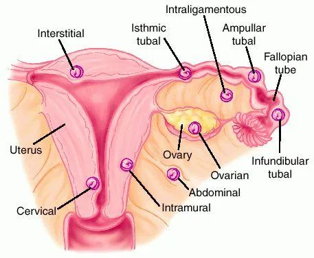

Expanded Nursing Uganda Explanation
Ectopic Pregnancy should be reviewed through safe maternal and newborn assessment, early recognition of danger signs, respectful communication and timely referral. Connect the definition to vital signs, bleeding, fetal or newborn wellbeing, patient education and local protocol requirements.
Contents, 14 sections (tap to expand)
01 ECTOPIC PREGNANCY
Ectopic pregnancy is a gestation that implants outside of the endometrial cavity.
An ectopic pregnancy most often occurs in a fallopian tube . This type of ectopic pregnancy is called a tubal pregnancy .
An ectopic pregnancy is estimated to occur in 1 of every 80 spontaneously conceived pregnancies.
02 ANATOMICAL LOCATION OF ECTOPIC PREGNANCY
Tubal (99%)
- Ectopic Pregnancy occurs anywhere in the fallopian tube.
- The most common site is the ampulla.
- Interstitial (cornual) pregnancies occur in the most proximal tubal segment, which runs through the uterine cornua. This type of ectopic pregnancy can grow to be quite large, and rupture may cause massive haemorrhage.
Ovarian (0.5%)
- Ectopic Pregnancy occurs in the ovary .
Abdominal (less than 0.1%)
- Ectopic Pregnancy occurs in the abdomen .
- With possible adherence to the peritoneum, visceral surfaces, or omentum
Cervical (0.1%)
- Ectopic Pregnancy occurs in the cervix .
- A cervical ectopic, in which the pregnancy implants on the cervix itself, is very rare. Most cervical pregnancies will result in miscarriage. The risk of bleeding, either with spontaneous miscarriage, or for those which require surgical intervention, is much higher
Heterotopic Pregnancy
- This is a very rare type of multiple pregnancy , in which one viable pregnancy develops within the uterus, and another fertilised egg is implanted elsewhere as an ectopic pregnancy.
- It occurs in less than 1 in 30,000 naturally occurring pregnancies, and is slightly more common in couples who conceive through assisted conception.
- Both intrauterine and ectopic pregnancies may occur concomitantly.
Caesarean Scar Pregnancy
- Rarely, the ectopic pregnancy can be located at the site of the scar from a previous Caesarean section . This occurs in 1 in 1,800 pregnancies .
Cornual/Interstitial
- Interstitial ectopic pregnancies are those which occur in the tissue of the Fallopian tube that lies within the muscular wall of the uterus.
- It can be quite difficult to diagnose through ultrasound, and may need laparoscopic (keyhole) surgery to confirm the diagnosis.
Other less common sites of ectopic implantation are the ovary, or a rudimentary uterine horn. Rarely, an ectopic may be intraligamentous or in the peritoneal cavity
03 CAUSES AND RISK FACTORS FOR ECTOPIC PREGNANCY
The occurrence of ectopic pregnancy has been associated with abnormal function of the fallopian tubes. Normally, the tubes facilitate collection and transport of the oocyte and embryo into the uterus. The integrity of the fimbria, lumen, and ciliated mucosa appears to be important for transport. Conditions thought to prevent or retard migration of the fertilized ovum to the uterus increase the risk for an ectopic pregnancy.
Abnormal Function of Fallopian Tubes :
- Normal function of the fallopian tubes, involving the integrity of fimbria, lumen, and ciliated mucosa, is crucial for the proper transport of the oocyte and embryo into the uterus.
- Conditions hindering migration of the fertilized ovum to the uterus elevate the risk of ectopic pregnancy.
Pelvic Inflammatory Disease (PID):
- Inflammation and scarring from PID affect intra and extra luminal structures, impairing normal tubal function.
- Severe damage may result in complete tubal blockage and infertility.
Tubal Surgery and Related Procedures:
- Tubal surgeries, bilateral tubal ligation, and tubal reanastomosis may lead to scarring, narrowing, or false passage formation.
- Other pelvic and abdominal surgeries may cause peritubal adhesions, although not directly associated with ectopic pregnancy.
Chlamydia, Gonorrhea, Endometriosis, and Salpingitis:
- Infections, especially Chlamydia and gonorrhoea, which causes PID, contribute to inflammation and scarring.
- Conditions like endometriosis and salpingitis increase the risk of ectopic pregnancy.
Artificial Reproductive Techniques:
- In-vitro fertilization and gamete intrafallopian transfer have been linked to an increased risk of ectopic pregnancy.
- Retrograde embryo migration is considered a possible mechanism.
Delayed Fertilization:
- Possible transmigration of the oocyte to the contralateral tube and slowed tubal transport can delay the passage of the morula to the endometrial cavity.
Chromosomal and Structural Anomalies of the Conceptus:
- Anomalies in the chromosomes or structure of the conceptus may predispose individuals to ectopic pregnancy.
Developmental Abnormalities of the Tube:
- Abnormalities like diverticula, accessory ostia, and hypoplasia in the tube can elevate the risk of ectopic pregnancy.
- Exposure to diethylstilbestrol increases the risk four to five times.
04 RISK FACTORS FOR ECTOPIC PREGNANCY:
- Increased Maternal Age: Advanced maternal age is identified as a risk factor for ectopic pregnancy.
- History of Previous Ectopic Pregnancy : Individuals with a history of ectopic pregnancy have a 15% to 20% risk of recurrence in subsequent pregnancies, in either the same or opposite tube.
- History of Infertility : Infertile couples exhibit an increased proportion of ectopic pregnancies compared to the total number of pregnancies, regardless of the cause of infertility.
- Contraceptive Methods : Certain contraceptive methods carry a higher risk, including Progestasert IUD (15%), intrauterine devices (5%), and diaphragms. Oral contraceptives have a 1% risk, while intrauterine devices are highly effective at preventing intrauterine pregnancy, making any pregnancy in an IUD user more likely to be tubal.
- Progestin-only Contraceptives : Users of progestin-only oral contraceptives and injectable progestins face an increased risk of ectopic pregnancy if pregnancy occurs, possibly due to altered tubal motility.
- Peritubal Adhesions : Adhesions following post-abortal or puerperal infections, appendicitis, or endometriosis contribute to the risk of ectopic pregnancy.
- Cigarette Smoking : Studies indicate that cigarette smoking causes tubal ciliary dysfunction, contributing to the risk of ectopic pregnancy.
- Endometriosis : Endometriosis can make the uterus unsuitable for implantation, increasing the likelihood of ectopic pregnancy.
WHY AN ECTOPIC PREGNANCY HAPPENS?
05 Pathophysiology of an Ectopic Pregnancy.
- Fertilization occurs at the usual distal third of the fallopian tube.
- After the union, zygote begins to divide and grow.
- However, due to an obstruction by several factors (see Risk Factors), the zygote cannot travel through the length of the tube.
- It lodges on that constricted part and implantation takes place at that area instead of the uterus.
In a normal pregnancy, an egg is fertilized by sperm in one of the fallopian tube which connect the ovaries to the womb .The fertilized egg moves and implants itself into the womb lining endometrial ,where it grows and develops
So for an ectopic pregnancy, it occurs when a fertilized egg implants itself outside the womb.
06 CLINICAL PRESENTATION OF ECTOPIC PREGNANCY
An ectopic pregnancy does not cause noticeable symptoms and is only detected during routine pregnancy testing. However, most women do have symptoms and these usually become apparent between 5 to 14 weeks of gestation.
The Classic Triad of symptoms of ectopic pregnancy consists of
- Amenorrhea,
- Vaginal bleeding, and
- Lower abdominal pain.
Acutely ruptured ectopic pregnancy.
This clinical scenario represents a surgical emergency . The patient who has experienced rupture of her ectopic pregnancy will most likely have:
On History Taking:
- History of amenorrhoea 6 – 10 weeks.
- Patient complains of a feeling of fainting, dizziness, thirst, light vaginal bleeding and pelvic pain.
- Abdominal distension, Guarding and rebound tenderness.
- Patient complains of acute abdominal pain localized in the iliac fossa which is colicky in nature.
- She may also complain of ipsilateral shoulder pain from phrenic nerve irritation due to hemoperitoneum from the blood in her abdomen and it occurs in up to 25% of patients.
On Examination:
- Signs of pregnancy are present.eg darkening of areolar.
- Signs of shock e.g. cold clammy skin, rapid thread pulse, low blood pressure and low temperature
- Patient is anxious and restless
- Pallor of mucous membranes
On Palpation:
- Abdominal tenderness especially on the affected side.
- Abdominal muscles become rigid due to mother guarding against pain.
- Abdominal distention due to presence of blood in the abdominal cavity.
On Vaginal Examination:
- Amount of bleeding does not correspond to the mother’s condition.
- Tenderness on movement of the cervix and a mass is felt in the lateral fornix.
- Painful mass in the pouch of Douglas.
- Dark brown blood on the examining finger.
07 DIAGNOSIS OF ECTOPIC PREGNANCY
Ultrasound Confirmation : Utilization of ultrasound imaging as a primary diagnostic tool(golden standard).
- An ultrasound would reveal an empty uterus and free fluid (blood) in the peritoneal cavity. The diagnosis of ectopic pregnancy may be confirmed by the absence of intrauterine pregnancy (IUP) on ultrasound in a woman with a level of HCG sufficient to normal pregnancy, the absence of intrauterine pregnancy on ultrasound examination is diagnostic for ectopic pregnancy if the gestational age is known for certain or if the HCG level is >2500 IU per ml.
- Cordocentesis(Percutaneous umbilical cord blood sampling) , Aspiration of fluid from the cul-de-sac for evidence of intra-abdominal bleeding. It is a technique by which a needle attached to a syringe is inserted transvaginally through the posterior vaginal fornix into the pouch of Douglas to detect any fluid within the peritoneal cavity.
- Laparoscopy : Commonly performed surgical procedure for diagnosis. Follows symptoms of bleeding and a positive pregnancy test.
- Positive Pregnancy Test: Presence of human chorionic gonadotropin (hCG) in the blood or urine.
- Cullen’s Sign : Specific clinical manifestation suggesting a ruptured ectopic pregnancy. Periumbilical bruising due to blood tracking from the ruptured fallopian tube.
- Magnetic Resonance Imaging . This is also another way to detect the presence of ectopic pregnancy and it is safer than undergoing a CT scan for pregnant women.
- Hematocrit and Haemoglobin Levels: Routine blood tests to assess for signs of anaemia due to internal bleeding.
08 DIFFERENTIAL DIAGNOSIS OF ECTOPIC PREGNANCY.
Gynecologic problems
- Threatened or incomplete abortion
- Ruptured corpus luteum cyst
- Endometriosis
- Gestational trophoblastic diseases
- Ruptured corpus luteal cyst
- Dysfunctional uterine bleeding
- Acute pelvic inflammatory disease
- Adnexal torsion
- Degenerating leiomyoma (especially in pregnancy)
- Salpingitis
Non Gynecologic Problems
- Acute appendicitis
- Pyelonephritis
- Pancreatitis
09 MANAGEMENT OF ECTOPIC PREGNANCY.
Management has two modalities:
- Surgical approach.
- Medical approach.
In maternity center
Aims
- To prevent shock
- To relieve pain
- To reassure the patient
- Admission : The patient is admitted temporarily in a gynecological ward in a well-made warm bed.
- Histories : These are taken including personal, social, surgical, medical, obstetrical history, how the condition started etc
- Examination : This is carried out from head to toe to rule out anaemia, dehydration, shocketc
- Observation : Temperature, pulse, respiration and blood pressure are taken and recorded to assess functioning of vital organs. The foot of the bed should be raised to allow blood to move to vital centres.
- Send for transport as soon as possible and inform the patient and relatives about the decision made and why it is necessary.
Treatment
- Put up intravenous infusion of normal saline to prevent or treat shock.. This is to elevate low blood pressure.
- Administer morphine or pethidine to relieve pain as prescribed.
- Nursing care: The vulva is swabbed and a clean pad is applied.
- Send the patient to hospital with a written note stating when the patient reported to the centre, condition on admission and at time leaving and treatment given.
In the Hospital
Aims :
- To treat anaemia
- To prevent or treat shock
- To reassure the patient
- To prevent complications
It is a gynaecological emergency , requiring swift action.
Management
Admission : Admit the patient to a well-ventilated room and a warm admission bed. Establish a good nurse-patient relationship.
Histories : Take comprehensive history, including personal data, presenting complaints, and obstetrical and medical history.
General Examination: Perform a head-to-toe examination to rule out anaemia, shock, dehydration, etc.
Observations: Monitor vital signs like temperature, pulse, respiration, and blood pressure. Inform the doctor about the patient.
Investigations: Conduct investigations as required by the doctor, including Hb, grouping and cross-match, ultrasound scan, and urinalysis.
Resuscitation:
- Administer intravenous fluids (e.g., normal saline) and maintain a fluid balance chart.
- Consider blood transfusion based on haemoglobin results.
- Provide pain relief with analgesics like morphine as prescribed by the doctor.
- The doctor will determine the operation.
Preparation for Theatre:
- Explain the nature of the operation and obtain informed consent.
- Reassure the patient to allay anxiety.
- Inform theatre staff.
- Pass an intravenous line for infusion.
- Perform vulva swabbing to minimize infections.
- Catheterization is done, and a fluid balance chart is started.
- Pass a naso-gastric tube for aspiration of gastric contents or administer an anti-acid like magnesium trisilicate to alkalize stomach contents and prevent aspiration into the lungs.
- Pre-medication is given, such as atropine to dry secretions.
- Repeat vital observations and compare with baseline observations, recording all findings.
- Compile clinical charts and notes, dress the patient in a gown, and transport her carefully to the theatre.
- In the theatre, give a full report to the theatre nurse about the patient.
- Book about 1-2 units of blood.
Surgical treatment of ectopic pregnancy has the advantage of taking care of the ectopic immediately. It is suitable for emergency care of ectopic pregnancy. It is critical to establish large-bore intravenous lines and to start fluid resuscitation.
Salpingectomy , the removal of the fallopian tube containing the ectopic pregnancy, is the treatment of choice in the following situations:
- Future childbearing is not desired.
- The tube is severely damaged.
- Bleeding cannot be controlled.
- The ectopic is in a fallopian tube where an ectopic occurred previously.
Linear salpingostomy , the removal of the gestation through a linear incision in the fallopian tube, may be performed if future fertility is desired.
- This procedure is associated with a persistent ectopic pregnancy rate of 3% to 20%.
- Therefore, serial quantitative HCG values must be followed to ensure resolution.
Operative laparoscopy may be performed to confirm the diagnosis of ectopic pregnancy and to remove the abnormal gestation via salpingectomy or salpingostomy. This method is used in hemodynamically stable patients. Advantages of this technique over laparotomy include:
- Shorter hospital stay
- Faster postoperative recovery
- Better cosmetic result
- Potentially shorter operative time
Laparotomy is reserved for hemodynamically unstable patients who require emergent surgery for a ruptured ectopic pregnancy. This method may also be appropriate when laparoscopy is contraindicated or technically challenging because of extensive adhesive disease from prior surgery.
Cornual resection, may be performed when an interstitial pregnancy occurs. The interstitial portion of the tube is removed via wedge resection into the uterine cornua. Cornual ectopic pregnancies have a higher failure rate with methotrexate and a surgical approach may be more effective.
Oophorectomy is indicated only when an ovarian ectopic pregnancy occurs and salvage of the affected ovary is not possible.
Post-operative Bed Preparation : Set up the bed with all necessary accessories ready to receive the patient.
Patient Transfer : Inform ward staff, and two qualified nurses go to the theatre to collect the patient. In theatre, receive a full report from the anaesthetist and theatre nurse in a recovery room, reporting the patient’s condition.
Confirm the Report:
- Check airway, breathing, and circulation.
- Take vital observations.
- Observe the site of operation for bleeding.
- Observe the catheter to see if it is draining well and in a good position.
Patient Transfer to Ward: After confirming, gently wheel the patient to the ward in a recumbent position with the head turned to one side, observing the airway.
On Ward: Lift the patient from the trolley carefully to a well-made post-operative bed near the nurse’s station for close observations.
- Place the patient in a recumbent position with the head turned to one side for drainage of secretions and to prevent the falling back of the tongue.
- Conduct observations and record vital signs (temperature, respiration, blood pressure, and pulse) every 1/4, 1/2, 1, 2 hours as per surgeon’s instructions. Adjust the duration based on patient stabilization. Continue observations until the patient is discharged.
- Observe the site of operation for bleeding.
- Observe the catheter for drainage, color, and the quantity of urine passed.
- Maintain a fluid balance chart and balance it every 24 hours to rule out renal failure.
- On regaining consciousness, welcome the patient from the theatre, sponge the face, change the theatre gown, conduct mouthwash to remove the anesthetic smell, and offer a pillow.
Fluid/Hydration:
- Continue intravenous fluid (e.g., 0.9%) to replace lost fluids.
- Observe IV infusion, including cannular site for swelling and drip rate; correct any issues.
- Monitor fluid intake and output to avoid overhydration.
- Stop IV fluids when bowel sounds are heard, and the patient can take by mouth.
- Remove the cannula when necessary, e.g., if the patient has completed intravenous drugs.
Drug Therapy:
- Administer prescribed strong analgesics (e.g., pethidine for 48 hours, then switch to mild analgesics like diclofenac 50-100mg tds).
- Administer prescribed antibiotics (e.g., x-pen 2mu qid for 72 hours, then change to oral antibiotics if necessary, such as amoxyl 250-500mg tds for 5 days).
- Monitor the patient for side effects of the drugs given.
- Provide supportive drugs like ferrous and folic acid to prevent anemia.
Wound Care:
- Observe the wound for bleeding and add more dressing if needed. Change the dressing if soiled and check for signs of infections.
- Conduct daily wound dressing.
- Remove stitches on the 7th and 8th day alternately.
Physiology :
- Encourage the patient to do deep breathing exercises to prevent chest complications like hypostatic pneumonia.
- Encourage passive exercises, such as limb movement, and later active exercises like walking around to prevent deep vein thrombosis.
- Provide psychotherapy for continuous reassurance.
Diet :
- Conduct a digestion test, and if positive with bowel sounds heard, start the patient on small sips of water.
- Introduce soft foods according to tolerance, rich in proteins for tissue repair, roughages to prevent constipation, and carbohydrates for energy.
- Note : The nasogastric tube is removed as long as the patient can take orally without any complaint.
Hygiene :
- Conduct a bed bath on the first day of operation when the patient is still weak, and later assist her to the bathroom.
- Conduct mouth care to prevent neglected mouth complaints like stomatitis, halitosis, etc.
- Ensure that the patient’s clothing, bed linen, and the surrounding environment are clean.
Bowel and Bladder Care:
- If urine is clear in 24-48 hours, remove the urethral catheter and encourage the patient to pass urine.
- Encourage the patient to pass stool, offer privacy, and provide foods rich in roughages to prevent constipation.
- In case of constipation and failed conservative measures, give purgatives such as bisacodyl 5-10mg o.d or nocte.
Rest and Sleep:
- Keep the patient in a quiet, well-ventilated room.
- Restrict visitors, avoid bright light to create a conducive environment for the patient to sleep and rest.
Advice on Discharge: When the patient is fit for discharge, advise on:
- Having enough rest at home.
- Avoiding heavy lifting to prevent straining the abdominal muscles.
- Coming back for review on appointed dates.
- Attending ANC clinics when pregnant.
- Bringing the husband for treatment if the cause of ectopic pregnancy was PIDs.
- Completing the prescribed medications.
In case of Unruptured Ectopic Pregnancy, Medical Approach can be used.
Methotrexate, a chemotherapeutic agent, has been used successfully to treat small, unruptured ectopic pregnancies. This approach has the advantage that it avoids surgery, but the patient must be counselled that it may take 3 to 4 weeks for the ectopic to resolve with methotrexate therapy. Early diagnosis is very paramount for successful management.
Mechanism of action
- Methotrexate is a folic acid antagonist that interferes with DNA synthesis. Its action is principally directed at rapidly dividing cells, such as trophoblastic cells.
- Once an ectopic pregnancy has been confirmed, 50 mg/m 2 is administered intramuscularly in a single or multiple doses with folic acid.
- Serial HCG levels are followed every 2 to 4 days after treatment until the HCG level starts to decrease. This is to ensure resolution of the pregnancy
- If a 15% reduction is not achieved during the first week, or in subsequent weeks a plateau occurs, then an additional injection of Methotrexate is given or surgical exploration is advocated.
- Decreased success has been noted with ectopic pregnancies of greater than 3.5 cm, with fetal cardiac activity, or with high HCG levels (greater than 5000).
- After treatment failures, surgical management is usually necessary.
- After an ectopic gestation, pregnancy should be avoided for at least 3 months to allow for the fallopian tube architecture to normalize.
- Contraception should be provided
Side effects (approximately 5% of patients).
- Mild gastrointestinal symptoms such as nausea, vomiting, diarrhoea, and stomatitis are typical.
- Potential life-threatening complications include pneumonitis, thrombocytopenia, neutropenia, elevated liver function tests, and renal failure.
Contraindications ,
- Women who are breastfeeding
- Immunodeficiency,
- Liver disease, renal disease,
- Blood disorders,
- Peptic ulcer disease,
- Active pulmonary disease should not receive methotrexate.
Criteria for medical management of ectopic pregnancy
- Criteria for receiving methotrexate(MTX) ( Absolute indications) Contraindications to medical therapy ( Absolute contraindications)
- Hemodynamically stable without active bleeding or signs of hemoperitoneum Non Laparoscopic diagnosis Patient desires future fertility General anaesthesia poses a significant risk Patient is able to return for follow-up care No contraindications to MTX Relative indications Unruptured mass ≤3.5 cm at its greatest dimension No fetal cardiac motion detected Patients whose hCG level does not exceed a predetermined value (6000-15,000 mIU/Ml Breastfeeding Laboratory evidence of immunodeficiency Alcoholism, alcoholic liver disease, or other chronic liver disease Preexisting blood dyscrasias, such as bone marrow hypoplasia, leukopenia, thrombocytopenia or significant anaemia Known sensitivity to MTX Active pulmonary disease Peptic ulcer disease Hepatic, renal, or hematologic dysfunction Relative contraindications Gestational sac =3.5 cm Embryonic cardiac mo tion
10 COMPLICATIONS OF ECTOPIC PREGNANCY
The most common complication is rupture with internal haemorrhage which may lead to hypovolemic shock. Death from rupture is rare in women who have access to modern medical facilities.
- Infertility
- Recurrence
- Severe haemorrhage leading to shock
- Anaemia due to bleeding.
- Infections following operation.
- Adhesions due to scar formation during healing process.
- Re-occurrence of another ectopic pregnancy.
- Infertility if both tubes are affected.
Nursing Diagnosis
- Risk for Deficient Fluid Volume related to bleeding from a ruptured ectopic pregnancy.
- Fatigue related to early loss of pregnancy secondary to ectopic pregnancy.
Nursing Interventions
- Upon arrival at the emergency room, place the woman flat in bed.
- Assess the vital signs to establish baseline data and determine if the patient is under shock.
- Maintain accurate intake and output to establish the patient’s renal function.
Evaluation
- The goal of the evaluation is to ensure that maternal blood loss is replaced and the bleeding would stop.
- The patient must maintain adequate fluid volume at a functional level as evidenced by normal urine output at 30-60mL/hr and a normal specific gravity between the ranges of 1.010 to 1.021.
- Vital signs, especially the blood pressure and pulse rate, should be stable and within the normal range.
- Patient must exhibit moist mucous membranes, good skin turgor, and adequate capillary refill.
11 Nursing Uganda Clinical Lens
Use Ectopic pregnancy as a practical nursing topic, not only a memorized definition. Read the topic through the safety of two patients: the mother and the fetus or newborn.
- What to understand first: define ectopic pregnancy, identify the normal or expected pattern, then explain what changes when the patient is unwell.
- Why it matters in care: the nurse must recognize risk early, explain findings clearly, document accurately and know when to escalate.
- How to revise it: connect each point to assessment, nursing diagnosis or care problem, intervention, rationale and evaluation.
12 Assessment Guide
- Maternal vital signs, bleeding, pain, contractions, uterine tone and danger signs.
- Fetal or newborn wellbeing, feeding, temperature, breathing and activity.
- History of pregnancy, parity, medications, allergies, investigations and referral risks.
13 Nursing Priorities, Rationales and Outcomes
- Recognize danger signs early and escalate without delay.
- Provide respectful communication, privacy, infection prevention and clear documentation.
- Teach the mother what to monitor at home and when to return urgently.
The rationale for these priorities is patient safety: nursing actions should prevent deterioration, reduce discomfort, support recovery and create clear evidence for the next caregiver.
- Expected outcome: Mother and baby remain stable, danger signs are acted on early, and the family understands follow-up instructions.
14 Patient Teaching and Revision Check
- Explain ectopic pregnancy in simple language the patient or caregiver can repeat back.
- Teach warning signs, medicine or follow-up instructions, hygiene or lifestyle points where relevant.
- For exams, prepare a short answer using: definition, causes or risk factors, signs, assessment, management, complications and prevention.
- For ward practice, document baseline findings, actions taken, patient response and the plan for review.
Illustrations and Diagrams (3)



Related Video Lectures
Watch nursing lecture videos on YouTube for this topic. Opens in a new tab.
Watch on YouTubeExternal link: YouTube may use its own cookies and terms. Nursing Uganda is not affiliated with YouTube.